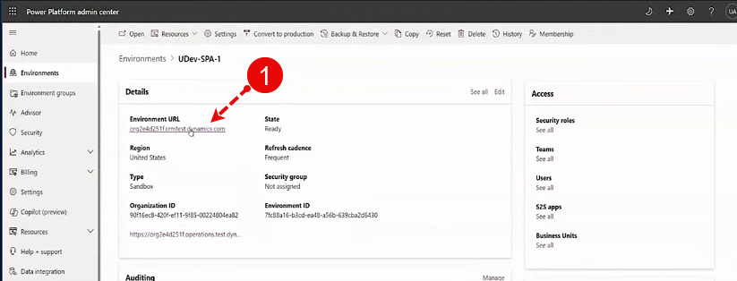

1- Click on the Environment Url (CRM URL)

2- A new Page pops out, click on the app named finance and operation package manager

3- once it is open, Click on the Button Operation history
This will list down your environment app history for finance and operations app. So here you can see the time and you have
updated my environment at
4- Click on operation name, to see the detailed logs

the logs are here: